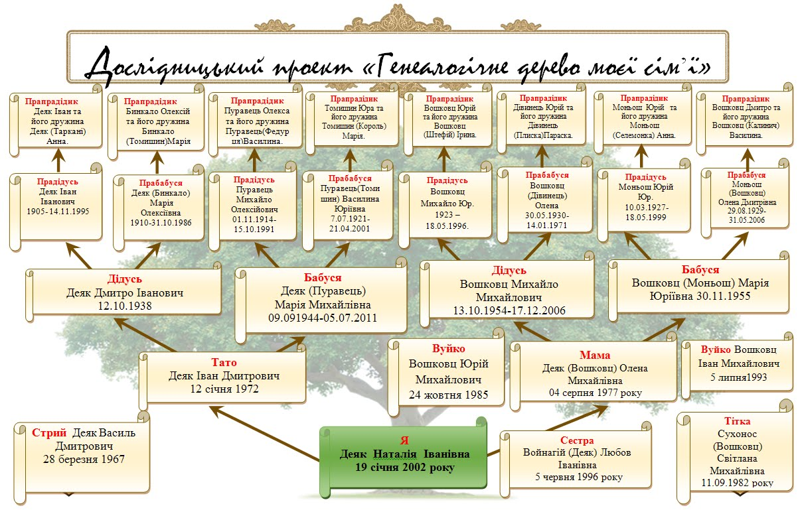

Ласкаво просимо до генеалогії
Ця сторінка покликана дати початок для тих кому цікаво почати вивчення історії свого роду.
Як почати будувати своє сімейне дерево
Побудова сімейного дерева може бути захопливим і пізнавальним процесом. Ось кілька кроків, щоб розпочати:
- Зберіть інформацію: Почніть з себе і своїх найближчих родичів. Запишіть імена, дати народження, шлюби і смерті.
- Опитайте родичів: Розпитайте старших членів родини про їхніх батьків, дідусів і бабусь.
- Перегляньте документи: Знайдіть старі фотографії, листи, свідоцтва про народження, смерть, одруження та інші документи.
- Використовуйте онлайн-ресурси: Є багато сайтів і баз даних, які можуть допомогти знайти інформацію про ваших предків.

Корисні посилання
Ось деякі ресурси для пошуку інформації про ваших родичів:
- Державні архіви України
- Український мартиролог ХХ cт. – це інформаційно-пошуковий інтернет-проєкт, розміщений на офіційному вебпорталі Державної архівної служби України, база даних якого містить стислу інформацію про постраждалих від репресій 1920–1950-х років: фотопортрет або кілька фотографій (за наявністю), ім’я особи та коротка характеристика роду занять, дати життя, відомості щодо реабілітації, посилання на архів, де зберігаються архівно-слідчі справи та інші дотичні матеріали.
- Архіви Криму
- ЦЕНТРАЛЬНИЙ ДЕРЖАВНИЙ ІСТОРИЧНИЙ АРХІВ УКРАЇНИ, м. КИЇВ
- Мартиролог
- Списки репресованих
- Учасники Другої світової війни
- Жертви Голодомору
- Меморіал Голокосту “Бабин Яр”
- Благодійний фонд «Героїка»
- «Крим — це Україна»
- LIBRARIA, архів української періодики онлайн
- FamilySearch International (США)
- Національний Меморіал Катастрофи і Героїзму Яд Вашем (Держава Ізраїль) RU
- Меморіальний музей Голокосту (США)
- Державний архів в Автономній Республіці Крим
- Державний архів Вінницької області
- Державний архів Волинської області
- Державний архів Дніпропетровської області
- Державний архів Донецької області
- Державний архів Житомирської області
- Державний архів Закарпатської області
- Державний архів Запорізької області
- Державний архів Івано-Франківської області
- Державний архів Київської області
- Державний архів Кіровоградської області
- Державний архів Луганської області
- Державний архів Львівської області
- Державний архів м. Києва
- Державний архів м. Севастополя
- Державний архів Миколаївської області
- Державний архів Одеської області
- Державний архів Полтавської області
- Державний архів Рівненської області
- Державний архів Сумської області
- Державний архів Тернопільської області
- Державний архів Харківської області
- Державний архів Херсонської області
- Державний архів Хмельницької області
- Державний архів Черкаської області
- Державний архів Чернівецької області
- Державний архів Чернігівської області
Контактна інформація
Зв’яжіться з нами: illia@maier.page